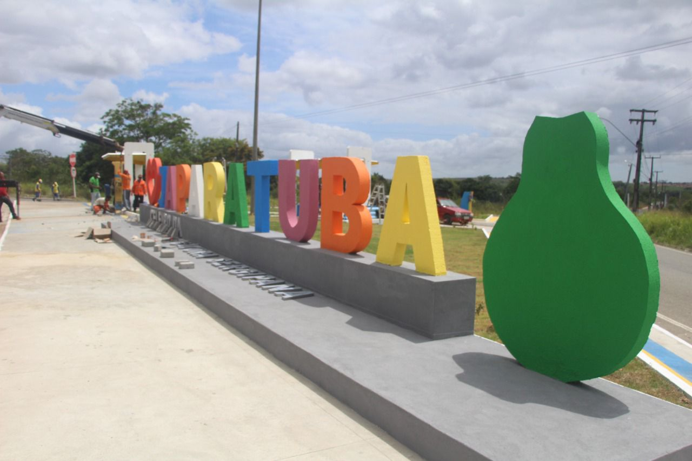

Japaratuba
História
Localizado no Vale do Cotinguiba, na Zona Norte do estado e distante apenas 54 quilômetros de Aracaju, Japaratuba é um município com 374,3 quilômetros quadrados e com população estimada em 16 901 habitantes, segundo o censo de 2010. Desde a sua formação, estabeleceram-se engenhos em volta da missão, motivo pelo qual recebeu um grande fluxo de escravos. De acordo com o historiador Felisbelo Freire, o município chegou a ter mais escravos do que pessoas livres. O município também abrigou um dos mais importantes quilombos de Sergipe, hoje o povoado Patioba. Japaratuba foi emancipada em 11 de junho de 1859. Em 24 de agosto de 1934, pelo Decreto-lei 238, do então interventor federal coronel Augusto Maynard Gomes, a sede do município de Japaratuba foi elevada à categoria de cidade. O município mantém suas tradições, como a Festa das Cabacinhas, artesanato e grupos folclóricos.
O artesanato de Japaratuba é conhecido no Brasil e no exterior pela qualidade, preço e diversidade. É uma tradição passada de pai para filho. Os artesãos produzem peças das mais variadas como telas, rendas, tricôs, crochês, bordados, rendendê, ponto de cruz, crivo e linho, tecelagem, rede de pesca e jereré. Alguns artesãos se destacam pelos trabalhos em madeira,tabua, bambu e cipó, criando bolsas, vassouras, cestos, chapéus, covos e peças com material reciclado. RELIGIOSIDADE: Por sua miscigenação (Europeu-Ameríndio-Negro), é visível o Sincretismo Religioso, possuindo vários e diversos templos, dentre os quais destaca-se a Igreja Matriz de Nossa Senhora da Saúde, avistada desde a BR-101,imponentemente edificada lá no alto. É o maior monumento artístico e cultural da cidade. Inaugurada em 1882, foi erguida nas santas missões, quando os missionários iam até as pedreiras e voltavam em procissão, trazendo pedras para a construção da Igreja.
fonte: https://japaratuba.se.gov.br/a-cidade/Pontos Turísticos
Vale do Cotinguiba
A cidade de Japaratuba, está localizada no Vale do Cotinguiba, a aproximadamente 60 km de Aracaju. O município mantém suas tradições, como a Festa das Cabacinhas com artesanato e grupos folclóricos. O artesanato de Japaratuba é conhecido no Brasil e no exterior por sua qualidade, preço e sua diversidade. É uma tradição passada de pai para filho. Os artesãos produzem peças dos mais variados tipos como: telas, rendas, tricôs, crochês, bordados, rendendê, ponto cruz, crivo, linho, tecelagem, rede de pesca e jereré. Alguns artesãos se destacam pelos trabalhos em madeira, tábua, bambu, cipó, criando bolsas, vassouras, cestos, chapéus e peças com material reciclado. Alguns dos seus principais pontos turísticos são: a Igreja Matriz de Nossa Senhora da Saúde que é o maior monumento artístico e cultural da cidade; o Alto do Lavrado que é o ponto mais elevado da cidade; a Gruta do Capim Branco localizada próximo ao Povoado São José da Caatinga; e o Memorial Histórico e Cultural que possui pinturas que retratam paisagens rurais, um acervo de peças religiosas e fotos antigas da cidade.
Dados Gerais de acordo com o IBGE
| Prefeito (a) | Lara Adriana Veiga Barreto Ferreira |
| Vice-Prefeito (a) | Helio Sobral |
| Site do município | https://japaratuba.se.gov.br/ |
| Área territorial | 365,677 km² |
| População estimada | 19.067 pessoas |
| Densidade demográfica | 46,22 hab/km² |
| IDHM | 0,621 |
| PIB per capita | R$ 22.200,81 |